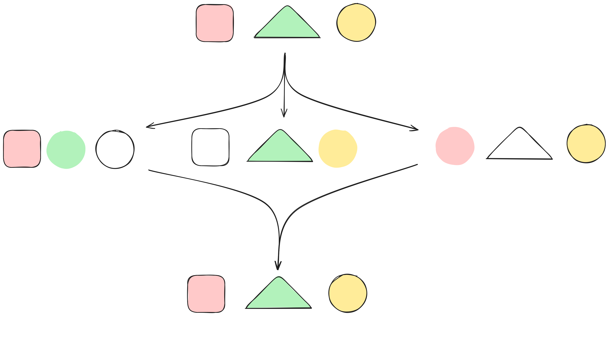

Introduction
In this document, we will explain how O.R.CA works.
warning
This book contains the O.R.CA documentation and should not be confused with the exploitation manual (which will be your customised user manual and workflow for your own offline CA).
In case you encounter a term that you do not understand, please refer to the glossary
To create a copy of your exploitation manual, you will need to install the nix package manager on your machine. Make sure the flakes and nix-command features are enabled (otherwise you'll have to explicitly enable them for each nix command).
Then fetch a brand new template for your offline CA, by creating a new folder, and running the following commands inside this folder:
nix flake init -t github:eove/orca/v0.1.0 --refresh
git init .
git add .
git commit -m "Initialisation of our O.R.CA exploitation repository"
Then push this folder into a new repository in your organisation.
This will be the repository where all changes to your offline root CA will be committed (containing documentation and workflows, as well as automation scripts). We will call this the exploitation repository.
You will now have to document your offline CA, that is to say, customise your exploitation manual.
caution
The parts that need the most attention are highlighted with caution alerts like this one.
To generate and display the default exploitation manual in a web-browser, run:
nix develop --command mdbook build --open
note
What is displayed initially when you run the above command has directly been taken from the nix template.
It contains the default documentation we have prepared. You should review it and modify the relevant .md files to fit your needs, regenerating and browsing the updated documentation again as needed.
Next to that default exploitation manual, you will find default scripts to operate the offline CA.
Before you start doing anything on it, you'll need to understand how O.R.CA works, its threat model, its limits and how to interact with it in general. This is the subject of the next chapters.
The key feature of O.R.CA is to handle the offline part of a Public-Key Infrastructure (PKI).
The whole chain of trust starts with the root Certificate Authority (CA). That's why it must be kept as secured as possible.
To achieve this, the PKI is split in two parts:
- the offline CAs, that contain multiple CAs, one of them is the root CA (topmost root of trust).
All of these offline CAs are manipulated using O.R.CA.
The offline CA (managed according to O.R.CA) is not a machine, it is a database (a set of backup files) fetched into an ephemeral machine only during the time when the offline CA needs to be manipulated/modified. - the online CAs which are used on a daily basis.
note
What follows is only a recommandation. If you have good reasons not to follow it, please do so and document it in your exploitation manual.
The definition of short here depends on your needs. The shorter the better.
In the offline part of the PKI, the root CA delegates its signing rights to offline intermediate CAs that are restricted to a given subdomain. This offline intermediate CA will then delegate its signing rights to an online intermediate CA that is valid for a short amount of time. It is up to the online intermediate CA to sign certificates on a day to day basis.
Here is a graphical representation of a chain of trust:
flowchart TD
subgraph Offline authorities
ROOT_CA>"<b>ROOT CA</b>
*.example.com
fa:fa-hourglass 30yrs"]
INTERMEDIATE_CA>"<b>Offline intermediate CA</b>
*.sub.example.com
fa:fa-hourglass 30yrs"]
INTERMEDIATE_CA2>"<b>Offline intermediate CA</b>
*.other.example.com
fa:fa-hourglass 15yrs"]
end
ROOT_CA --> |delegates| INTERMEDIATE_CA
ROOT_CA --> |delegates| INTERMEDIATE_CA2
INTERMEDIATE_CA --> |delegates| VAULT_PKI
INTERMEDIATE_CA2 --> |delegates| VAULT_PKI2
subgraph Online authorities
VAULT_PKI>"<b>Online intermediate CA</b>
*.sub.example.com
fa:fa-hourglass 10yrs"]
VAULT_PKI2>"<b>Other intermediate CA</b>
*.other.example.com
fa:fa-hourglass 5yrs"]
VAULT_PKI -->|signs| EOCON1("fa:fa-barcode XXX.sub.example.com
fa:fa-hourglass 2yrs")
VAULT_PKI -->|signs| EOCON2("fa:fa-barcode YYY.sub.example.com
fa:fa-hourglass 2yrs")
VAULT_PKI2 -->|signs| EOCON3("fa:fa-barcode ZZZ.other.example.com
fa:fa-hourglass 1yrs")
end
Since O.R.CA protects highly sensitive data (like the root CA), it must be impossible for a single person to manipulate it. For more details, see O.R.CA's threat model.
Hashicorp vault (the tool used under the hood by O.R.CA) encrypts (aka seals) every secret it stores. Thus, even if you have access to vault's database's files, you cannot read or change any data in that database without the encryption key.
The encryption key is never stored anywhere. Instead, it is split into multiple parts called "shares". Each share is securely given to a different human being that must keep it secret. We call these people "share holders". To decrypt (aka unseal) vault's database, a number of shares higher than a threshold is necessary. This is called a quorum.
A good starting point is to be split among at least 5 share holders (the more the merrier) and a quorum of at least 3 people.
The downside of that technique is that we must verify regularly that we can reach a quorum. If we lose our ability to reach a quorum, then the whole PKI is lost forever. Here are some events that may impact our ability to reach a quorum:
- people may lose their share
- people may leave the company
Thus it is important to:
- regularly check that all share holders still have access to their share
- revoke the shares owned by people leaving the company
- keep the number of shares high by regularly creating shares for people entering the company
- make sure that share holders can keep their share securely (in a safe encrypted storage)
The first 3 items are taken care of by running the periodical check workflow. The 4th item is guaranteed by the fact that:
- shares are only stored encrypted
- the decryption process uses secure hardware token
- the cleartext share is never disclosed
Threat model
The goal of O.R.CA is to give a good-enough security of the offline part of the PKI while keeping the cost as low as possible.
The target audience for O.R.CA is small to medium organisations that need to create their own PKI (for IoT purposes for example) but don't have the capacity to handle it like a world-wide root PKI (as Let's encrypt, banks, do, for example).
This means that O.R.CA is not suited for state-level attacks.
warning
If your organisation can financially do more than what O.R.CA offers, you probably should.
The issues that O.R.CA aims to solve are two fold :
- Mistakes
- Ill-intent actions
Mistakes
Working on a high-level CA is stressfull and doing it by hand is error-prone. O.R.CA aims to reduce stress and mistakes thanks to automation. Every action made on the offline CAs must be automated via a script. There is no way to do anything meaningfull on the O.R.CA system other than a script. This is made easy thanks to the fact O.R.CA offers a way to test these scripts in VMs. On top of this, we heavily recommend to have a preproduction PKI to validate everything before running it on the production PKI. If any mistake is detected by O.R.CA or someone during a ceremony, O.R.CA will make sure that no erroneous data can be exploited.
Ill-intent actions
O.R.CA aims to protect the high-level CAs against one ill-intent person inside your organisation.
Ill-intent definition here is used loosely. It may be :
- someone that do wants to steal / damage your organisation (the usual definition)
- someone that is threatened (physically or mentally) in order to do something they don't want to do
- someone that is manipulated in order to do something compromising without understanding it
This means that, for our definition,
ill-intentis not necessarily someoneevil.
A person inside your organisation is anyone that has any privileged access to anything. It goes from the contractor that comes check your offices' heating system to your C-level people.
one ill-intent person is set as the goal of O.R.CA (and the limits details below will show that we are not perfectly there yet). As the strech goal, anywhere that limit can be raise, O.R.CA aims to make it configurable.
Limits of O.R.CA
O.R.CA has known limits (weaknesses) that you should consider before using it. These limits means one ill-intent person inside your organisation could technically get control over your offline root CA. These limits are considered acceptable with regards to the expenses and efforts that would be required to solve them.
Non dedicated hardware
O.R.CA doesn't ask for a dedicated computer to be used. This means that anyone that has full control over the computer that will be used for a ceremony could trick other people into thinking that they are using O.R.CA while they are actually using a counterfeit version.
This risk is mitigated by randomly selecting the hardware that will be used during each ceremony. We draw one hardware randomly among as many choices as possible.
God-like admin
If one person has full admin access to all/most of the hardware among which we draw, then they may deploy their attack everywhere. This make the randomization ineffective and other mitigations should be considered. Ideally, each hardware that may be selected should have a different administrator. The randomization process actually picks the administrator more than the hardware itself.
Non-selected but technically better mitigations
Here are some better mitigations with the reason we chose not to keep them.
The burner
We could buy a new computer for each ceremony. The whole team would go, purchase and unpack it together. That way, we are sure nobody touched it before (a supply chain attack of that scale is considered a state-level attack and is out of the scope of O.R.CA).
This heavily raise the cost of each ceremony, may become an issue for any emergency level ceremony (what if every shop in town is closed?), and is not environment friendly.
Dedicated hardware
A dedicated computer could be bought and kept safely. By safely, we mean that nobody can single handedly get access to it and nobody can single handedly deny access to it.
This is the same idea as secret sharing, but physically.
A safe with this feature would raise the cost to protect the offline root CA but would be worth it since it solves, for a one time cost, the limits of O.R.CA.
The next chapters form a fiction story to explain some scenarios of attacks and missuses that O.R.CA aims to solve. You can skip them if you are already convinced that handling a PKI should be done with care and/or you understand the risk scenarios associated with it. Have a good reading!
Jules Brown, Hole-in-one's CTO
A short story explaining what O.R.CA tries to tackle.
Foreword
This short story aims to explain why O.R.CA (and especially O.R.CA's workflow) are implemented the way they are. If you want the even shorter version of the story, you can go directly to the afterword section.
Prerequisites
Even though we want to make our explanation as accessible as possible, some topics won't be covered. We will list theses subjects and give a very short description of what's important about them in our context. If you want to know more about a subject or do not trust the very short desciption we made about it, please feel free to dig into it before going any futher. Wikipedia is probably a good place to start.
Monster-in-the-middle
When communicating with a server, it is highly probable that your data goes through a chain of machines to reach its destination. It is possible that one of these machines is own by an ill-intended person. Because of this, any data going from a computer to another via a public network is considered public knowledge.
Asymetric cryptography
Asymetric cryptography allows someone to publicly share a key (the public key) that can be used to cypher data while keeping another key secret (the private key) Once it has been cyphered, only the person with the private key is able to read the original message. Another way to use asymmetric cryptography is to sign a clear text message with the private key. Anyone with the public key can then verify the signature. This is a good tool to avoid monster-in-the-middle attacks.
The big idea
Jules Brown woke up with a solution to his problem. Finally, after two decades of searching! He ran to his brother's house and started to pitch his idea.
"Did you ever wonder about the quality of the water you use to cook? What about the quality of the food you cook? What if you had a smart strainer that would analyze the water going through it and give you all the relevant data? Are your pasta really gluten-free? Is your water contaminated with heavy metals? Are you eating too much carbs? All your questions answered in one app."
"Interesting idea" Vernes said. "If you want to move forward with it, you'll need a catchy name and some investment".
"I don't have a good name yet, but for the investment, I don't want to share this new market with anyone I don't trust a hundred percent. I am pretty sure I can bring half of it so I only need one person that can bring as much as me on the table."
"I see where you are going with this. Give me a week to think about it. Meanwhile, find a good name."
A week later, the two brothers met at Lou's cafe. Vernes went right to the point.
"You understand that if we do this and fail, it's the whole family that is going bankrupt?"
"Yes, I know. That's why we'll have quality and security as our core values."
"Ok, then we do fifty-fifty. I'll be the CEO and you'll be the CTO."
"Agree, you'd be a better face for the company than I would. And I still need to solve the technical challenges that comes with the idea. I am still strugling with a name though."
"What about Hole-in-one?"
"That's... creative..."
"The way I see it, if you're gonna go bankrupt building a company, why not do it with some style?"
"That's a dad joke!"
"Yes, and I love it! Don't judge me! Now, if we agree with the name, let's build a company!"
"Let's! First thing first, we should hire the perfect team."
Meet the team
Jules and Vernes decided to start by hiring a research and development team. After a month of interviews, they decided to hire three people:
Leiko, the hardware expert. Her ability to fix things with close to nothing and solve complex problems at the speed of thoughts quickly earned her the nickname of "Go Go". She'll be in charge of the design of the product up to the electronics. Once the actuators are setup, software will take care of the rest.
Shuri, the developer. She is the bridge between the physical world and the dream world. She is a senior developer able to improve any feature while coding it. Once her work is done, only two things are left : making computers up and running what she did and, of course massively produce the Hole-in-one first product!
Adira, the admin. Adira will be perfect to keep the Hole-in-one's ship flying! They are well versed in computer administration and complement it brillantly with their coding skills. They will ensure that every known security issue is taken into account.
Jules is not an expert in any of these subjects but, as CTO, he wants to understand most of it. The team may have a lot of explaining to do!
Vernes decided to hire a production team as soon as the first hardware prototype is ready. That way, they will have plenty of time to train and test their workflow in order to be as efficient as possible once the first version is ready.
Security first!
A few months had past and Leiko did a stellar job at creating a first prototype. Vernes started the hiring process for the production team. Shuri and Adira wanted to talk with Jules about the security system they have in mind.
"Ok, so, let me draw you a quick picture of how our system will work" said Shuri.

"Now, as you now, our strainer will collect data end send it to our server. That's the arrow number one. Then, whenever they feel like doing so, our customers will use our app on their smart phone which is going to get the data from our server. That's arrow number two."
"So far so good" Jules said.
"Of course, all the data we collect are private data so we don't want anyone to access someone else's data" added Shuri.
"Obviously!" Jules replied, "We just have to make our users create an account with a strong password and that's it! Isn't it?"
"Well, yes, but that won't be enough" Adira objected, "Remember the monster-in-the-middle attack? If you send your password in clear text, then the monster can read it and thus use it."
"Ok, then we just have to get the server's public key and send our password cyphered."
"Yes, well done. However, the monster could pretend to be the server and send you its public key. The monster then has your password and we are back to square one!"
"But, don't we do that everyday on the internet?"
"Yes, totally!" Shuri said, "That's why arrow number two is going to be the easy one. But let me explain to you how it works."
"I am all ears" Jules said.
"So, you found out the main part of how it works. The only missing part is : how do you know you have the correct public key?
The trick is to use a trusted third party. We are going to call that third party a Certificate Authority which we'll abreviate as CA.
Now, let's say you know a CA that you trust. You can then physically go to their place and ask their public key. You are now a hundred percent sure of their key.
On the other side, a company, let's say, your bank, wants to create a website to communicate with you. They can physically go see the same CA and ask them to sign a certificate. The certificate is a simple text document that contains some usefull data. To simplify the explaination, we'll focus on only two : the name and the public key.
Then, when you connect to your bank, the server sends you the certificate signed by the CA. You check the signature and the name written on the certificate. If everything matches, then it means that the CA physically met your bank and verified the public key. In other words, the CA trusts the bank with that public key. Since you trust the CA, by transitivity, you can trust the bank. "
"But, that is just indirection! Nobody goes to meet a CA!" Jules said.
"Some companies do! Like your computer manufacturer or phone manufacturer. And they ship their hardware with the public keys of some big, well known CAs.", promply replied Adira.
"Ok, so when I buy my phone the information about the CAs are their already. However, you said some CA. Why?" Jules asked.
"Well, you probably guessed that the CA becomes a single point of failure. If the CA is compromised, every connection depending on it may be compromised. That quite a big issue when you talk about something the size of the internet!" Adira explained, "Protecting it properly means having physical protections and digital protections close to what movies describes as a high security vault."
"Think bunkers, body guards, biometric security, video surveillance and all this kind of stuff" Shuri described.
"Wait! That's extremely expensive! That means having a certificate signed by such CA would cost a huge amount of money for this kind of companies to earn anything!" Jules observed.
"Yes, that's where an Intermediate CA comes in handy!" Adira started, "An intermediate CA is a CA which got a certificate signed by another CA and paid the corresponding fee. However, that CA is allowed to sign certificates only for a small number of years but with a relaxed security. For example, instead of meeting you physically, they can simply check that you do have control over the domain name you claim having."
"Or they can make the certificate signature system available online" Shuri added.
"Thus reducing the cost of getting a certificate and making it accessible" Adira concluded.
"Ok, let me draw what I understood" Jules said.

"So, there is a CA on top which my phone knows because my phone's manufacturer emmbedded its public key. Since it's the starting point of everything, I'll call it the Root CA. The Root CA signs the certificate of an intermediate CA. That intermediate CA signs the certificate of my bank. When I connect to my bank, it sends me the certificate. I check that it's signed by the Intermediate CA and that the Intermediate CA is signed by a Root CA that I know. That makes a chain of trust that allows me to trust the public key that my bank just gave me. I then use this key to cypher my password and authenticate to my bank. Correct?"
"That's a simplified version of it because we didn't get into all the details, but the most important parts are there, so… yes, you get it. The top most CA is indeed called a Root CA. The whole thing is called a Public Key Infrastructure or PKI for short" Adira replied, happy that their CTO understood so quickly.
"And that's totally the way we are going to secure the communication on the second arrow of my drawing!" Shuri added.
"What happens if a Intermediate CA is hacked?" Jules asked.
"Then the Root CA creates a document saying that this Intermediate CA is not valid anymore and publish it for everyone to see" Adira replied.
"That's what we call revoking a certificate. When we validate a certificate, we regularly check that it hasn't been been revoked" Shuri completed.
"Ok, I think I understand. But what about the first arrow? Can't we do exactly the same thing?" Jules asked, puzzled.
"Yes, we can, but we can do even better!" Shuri answered, "The issue with the password is that we still have to send it to the server. That means that if the server is compromised, all password needs to be changed because the server saw them."
"I think I know where this is going. You want the devices to authenticate with a public key too so that they never send the secret. Right?" Jules interrupted out of excitment.
"Yep! But since our strainers are not going to have a domain name, we won't be able to use a standard CA" Adira said, "we are going to need our own PKI."
"And as you know, the Root CA will have to be well protected!" Shuri added.
"I understand. This is key to the security of our whole system. However, we clearly don't have the means to protect it the way you described it.", Jules said, a bit worried.
"Well, we won't have the fate of the whole internet on our shoulders!" Adira started, "Any issue with the Root CA will only impact us. That would be a bump in the road for us but it wouldn't create an apocalypse. I think we can lower the security to something we can afford."
"Ok, that's quite a meeting already and I need a bit of time to wrap my head around all that" Jules interrupted, "I understand that the main subject that we have to discuss now is the protection of our Root CA. What about we tackle that subject another day? Once my brain rested a bit? Next Monday for example?"
"Good for me" Shuri replied.
"Perfect" Adira concluded.
That evening, Jules came home exhausted and slept like a baby.
CTO as a security guard
The next Monday, Jules, Shuri and Adira met again.
"I gave it some thoughts" Jules started, "We'll need a intermediate CA too since the production team will have to create certificates every day. Making the root CA easily accessible would be too risky."
"Agreed, we'll have an intermediate CA signed by the root CA that will be accessible by the production team. The intermediate CA will expire from time to time and that's the only moments we'll need to have access to the root CA" Adira said.
"If nothing goes wrong, yes" Shuri added. "We'll need access to the root CA if the intermediate CA is hacked in order to revoke it."
"So, the main question is to protect the root CA" Jules continued, "I think I'll keep it on my computer whose hard drive is encrypted and which has a strong password. I'll be the only one to know the password for the root CA's private key."
"That's a simple way to solve the issue" Shuri replied.
"But you'll have to make sure your computer is always up-to-date. The whole company security will depend on you and that computer" Adira insisted.
"That's my life's project we are talking about, of course I'll be careful! And I'll use my password manager to create a secured password and keep it safe" Jules replied.
The team decided to go for that. The company had a greater success than expected and by the end of year 1 was already selling more than 5000 units a month.
By the end of year 2 though, it seemed that some data got corrupted. Shuri's first analysis showed that some devices where connecting with two different certificates. Since certificates are loaded in the device only once on the production line, it meant that something was off with the PKI.
With the help of Adira, they quickly realised that some of the certificates where created by an unknown CA that somehow got signed by the root CA.
"No way!" Jules said, "I am the only one to have access to the root CA and I certainly did NOT sign any other CA than ours!".
"I understand Jules," Adira said, "and yet here we are. I will need to have access to your computer in order to check it. Of course, you are welcome to stay with me and do it with me."
"Ok, let's do that!" Jules said.
After a few research, they found something suspicious.
"Do you see that process?" Adira asked, "I think it's a key logger. Basically, it registers everything you type and sends it somewhere on the internet."
"How did it ended up there?! I obviously didn't install it!" Jules objected.
"It seems it got install 8 mounth ago. Did anything weird happen 8 mounth ago?" Adira asked.
"None that I can remember" Jules answered.
"Can we check your emails at that time?" Adira asked.
"Sure!" Jules volunteered.
Adira looked a bit in the emails that arrived around the date they found and quickly asked:
"Do you remember that email? Did you click on the link? If so, what happened?"
"Ho, yes! That's link to get a demo version of a software I wanted to test ! I installed it but the demo was very limited and buggy so I gave up quickly." Jules replied.
"That's because it's not a legit software !" Adira remarked, "I seems it comes from Evil Corp. It's a fishing email. By installing the pretend demo, you actually installed the keylogger, it probably also duplicated everything on your computer. Then they waited for you to use the root CA which you did 6 month ago to renew the Intermediate CA. At that point they got the password for the root CA and signed they certificate."
"Well, let's revoke their intermediate CA then!" Jules thought.
"Yes, that's a way to stop the bleeding but I am afraid the damage is done" remarked Adira.
"I don't know. I'll talk to Vernes about it" Jules concluded.
Half an our later, Jules was meeting with Vernes.
"We found what happened" Jules started, "We got hacked and found a way to close the door. Everything should go back to normal."
"I don't think so" Vernes said, "Our reputation is in a bad shape. Evil Corp's copy of the Hole-in-one is raising and they are flooding social networks with posts showing the problem. Half of the planned orders got cancelled. I am afraid that's the beginning of the end."
"That bad uh?" Jules asked, raising an eyebrow.
"I am afraid so. If I am correct, we'll have to get rid of people in a few months. And even with that, I don't think we'll survive" Vernes answered, sad.
"Fine, I'll talk to Dad" Jules said, shame resonating in his voice.
"Good luck with that" Vernes concluded, defeated.
That evening, Jules went to see his parents, Emmett and Clara, for dinner.
"Dad, I suppose you heard the news about Hole-in-one?" he asked.
"Yes we did son. I hope you'll recover" Emmett replied.
"Of course they will!" said Clara promptly.
"I am afraid not" Jules said, "Vernes is quite pessimistic about it. He thinks we'll go bankrupt within few mounth."
"Great Scott!" Emmett yelled.
"Dad" Jules started, "I hate to have to ask you that…"
"Say no more!" Emmett interupted, "I knew that day would come".
"And I spent long nights convincing your stubborn father!" Clara added.
"The keys of the Delorean are at the entrance. Go, warn yourself with every details needed to avoid this disater and come back quickly to avoid disrupting the spacetime continuum too much!" Emmett continued.
"Thanks Mom!" Jules said while hugging his father.
Jules went two years back in time, sent himself an email explaining everything and used the Delorean again to disappear back to the future.
Offline hardware
After reading what his future self had sent him, Jules set up a meeting to discuss more with Adira and Shuri. He still had to keep his promess to his dad and never mention their family's time machine.
"I think using my own computer may be a mistake. I'll use it every day and I am not infaillible. One day I may make a mistake and open a breach for a remote attack", he said.
"That's a good point" Adira replied, "what about having a dedicated computer for the root CA ?"
"That's a good idea, and we could make that computer completly offline to avoid any remote attack" Shuri added.
"And I'll keep that computer in a safe to make sure it doesn't see any network cable even when I am not looking" Jules concluded.
They agreed on that plan and created the company that way, which, once again, had a big success.
After two years of non-stop work, Jules decided it was time for well-deserved vacations. He decided to make his life-long dream come true and went to the Himalayas where he had a spiritual retreat away from any high-tech object. Overall, his trip lasted for two months.
When he arrived back at his home, Vernes was there, waiting for him.
"I hope you rested well because you are expected at work right now !" Verne said.
"What's happenning ?" Jules asked.
"One month after you left, the Intermediate CA got expired. We stopped production since a month." Vernes replied.
"Great Scott !" Jules yelled.
"That's fine, we'll survive this but it'd better not happen again !" Vernes said.
"We'll setup a yearly check to make sure that the intermediate CA will continue working for at least one more year." Jules offered.
"Sounds good to me." Vernes said.
One hour later, Jules was at work, signing the new Intermediate CA. The next day, production started again. 6 months later, everything was back on tracks.
Avoiding the single point of failure
"That's not enough!" said Shuri.
"What do you mean?" Jules asked.
"The yearly check is a good idea and we should keep it, but it's not enough", Shuri answered, "What if anything happens to you ? We tried everything to get access to the root CA when you weren't there. Thanks to a locksmith and Vernes, we could open the safe as you saw. We even guessed your session password!"
"And we'll need to talk about the a later by the way", quickly said Adira to Jules, half smiling.
"But we couldn't get the root CA password!" Shuri added.
"Since you created its password thanks to your password manager to which you setup a password we couldn't guess" Adira concluded.
"Isn't it good news?" Jules started, "It means the root CA was safe isn't it?"
"The good news is that you came back!" Shuri replied, "What if something happens to you?"
"That's not a plaisant thought." Jules said, "But it worth asking the question."
"I am afraid the only solution is to give access to the CA to someone else than you" Shuri stated.
"I agree" Jules said, "I would trust Vernes with my life but he doesn't have the technical knowledge necessary to work with the CA."
He paused, thinking.
"I trust all of you though. I'll give access to you both. I'll share the necessary passwords via our password manager." he concluded.
"Seems good to me" Adira said, "But please change them all for generated passwords!"
Six months later, Adira went to Jules home, crying. Fresh wounds were visible all over her body.
"I am sorry Jules" they said.
"What happenned Adira? Are you okay?" asked Jules.
"No, I am not!" Adira sobbed, "Some people came to my house and threatened me. They made me steal the root CA."
"I am so sorry Adira. You did the right thing. Your safety is worth more than any company, including ours" Jules said, calmly. He then stopped talking and gave Adira a reconforting hug.
After a few minutes and a lot of tears, Jules said: "Now, let's get you some help, physically and emotionnally."
Once Jules made sure that Adira was safe, he decided to go see his dad again. The issue was not his company anymore, it was about his friend.
After a quick conversation, Jules went two years back in time, before the production even started, and wrote himself an email.
Raise the bar
At this security meeting, Jules had requested everyone. Vernes was concerned as this had never happened before. He decided to go see his brother few minutes before the offical meeting.
"What's happenning Jules? Why do you need me?" Vernes asked.
"One of us will get physically attacked. We have to find a solution" Jules started.
"Or stop the whole thing all together" Vernes completed, "I get it. You have my full support."
"Thanks Vernes" Jules said.
5 minutes later, the meeting started.
"I want us to reconsider the risks for our root CA" Jules started, "Especially, I want us to consider that one of us could get physically threatened to steal it."
Everybody stayed silent for a few seconds, shocked by the request.
"First of all" Vernes start, "Let me be clear. If anything like this ever happens, please do not do anything stupid! Nothing is worth risking your life and this company is no exception! That's true for Jules and myself too. Don't even think twice. Do what you are told to do and be safe."
The atmosphere was heavy, nobody expected that. Not a word was said for the next two minutes.
Then Jules added, "Here's another way to think of the same problem: imagine that someone successfully corrupted me. Consider me as the attacker."
"And why don't we consider that we are all corrupted? Or at least more than one of us?" Leiko asked.
"That's a good point. However, we cannot protect ourself against an opponent with an overwhelming amount of resources like a state. Let's start with one bad agent, if we find a way to scale things up then all the better, but it shouldn't be the goal. We have to stop somewhere." Jules replied.
"Let's all take the rest of the day to thing about it calmly." Vernes said, "Then, starting tomorrow, please consider this when thinking about the security of our root CA."
"Thanks everyone" Jules concluded.
Never alone
"So, I gave it some thoughts" Jules started, "since we said that we cannot do anything alone, we could add what I would call an obeserver in order to be able to work with the root CA".
"That's a nice idea but it won't solve the issue because we have nothing that enforce it. If someone wants to do it alone, nothing stops them." Adira said.
"True" Leiko approuved, "but we could share the secrets necessary to access it. For exemple Jules would be the only one to know the code of the safe and Adira would be the only one to know the password of the root CA."
"Smart!" Adira remarked.
"But if any one of us has any issue, then we loose access to the root CA!" Jules said, remembering the Himalaya's incident.
"Then we should use the Shamir's Secret Sharing algorithm" Shuri said.
Seeing that everybody was giving her a puzzled look, she continued: "The Shamir Shared Secret algorithm allows us to share a secret between people while needing only a subset of those people to retrieve it."
Everyone kept their poker face.
"Let's say you have a secret, like the password to the root CA, that you want to keep safe. You also want to make sure that two people are here in order to access the secret. You can divide it in two and give one half to each of them. Let me draw you an exemple."

"Let's say the secret is red square, green triangle, yellow circle. We can give to Jules the information red green and yellow, and to Adira, square triangle circle. When they meet, they can rebuild the secret."
"So far, that's basically the same thing as what Leiko proposed" Adira said.
"So far, yes. It only adds the benefit of being scalable to any number of shares. If we want to split the key in four in order to all have a share, we could." Shuri replied.
"Ok, this part seems simple enough, but something tells me there is a catch." Jules said.
"Indeed. Let me draw something slightly different" Shuri replied.

"Now, I split the share in three, but I give a little bit more information to everyone. For exemple, the first share shows that the first element is a red square, the second one is green and the third one is a circle. That way, only two people are necessary to rebuild the secret. And that's true for any two pairs."
"I see!" Jules said, "And that way, even if one share is not accessible, you still can get access to the secret."
"Exactly, when we have enough people to get the secret, we say we have a quorum." Shuri added.
"But giving that much of the secret to each person is going to make brute forcing the secret easier isn't it?" Adira asked.
"That's where Shamir's Secret Sharing algorithm is brillant. It doesn't embed any information about the secret in the shares. The maths are complex but just consider it's the same idea with perfect secrecy added. Thus, we can safely share the secret between any number of people as well as choose the size of our quorum." Shuri replied.
"That's awesome!" Leiko said, "But getting access to the root CA start to get a bit complicated. We should document how to do it as well as keep track of who has a share."
"Perfect! Let's do all of this! Let's all have a share, including Vernes and set a quorum to a size of two." Jules said, enthusiastic.
"But how?" Leiko asked.
"Hashicorp vault is a solution that uses the Shamir's Secret Sharing algorithm. Even better, it can handle PKIs so we won't have any openssl command to handle." Shuri replied.
"Nice! I'll setup the offline computer with that." Adira said.
After three years of uninterrupted success, Adira enters Jules office, panic clearly readable on her face.
"What? What happenned?" Jules asked.
"We lost access to the root CA!" Adira replied.
"What? How?" Jules asked.
"It seems the hard drive died! I even tried to plug it to another computer to recover data. Nothing works. I can't read anything from it." Adira said.
Jules said nothing, not knowing if he should yell from anger or cry from sadness. Evil Corp is going to be delighted to exploit this issue to get as much market share as possible. Hole-in-one will probably not recover from this.
After a minute or two that seemed like hours to Adira, Jules finally calmly said "You did everything you could. Let me see how I can do some damage control."
That evening, Jules decided to go back in time again. At that rythm, past Jules is going to receive an email from future Jules everyday...
Need backup!
"What if anything happens to the offline computer?" Jules asked, onpening a new meeting.
"That's a good point!" Adira said, "We need to backup the offline root CA!"
"But all our backups are online spreaded in different places. Aren't they Adira?" Leiko asked.
"Indeed, they are." Adira replied.
"I don't think that's an issue." said Shuri, "since we are using a vault, the whole databased is encrypted with the password that we each have a share of. It cannot be read without a quorum. The real thing to protect and that should stay offline is the secret key."
"I agree" Adira said, "If we never reach a quorum on an online computer, then the key will not leak and we can save the database online."
"How safe is that encryption?" Jules asked.
"It uses an algorithm that is recommended to secure communications over internet." Shuri replied, "if this algorithm falls, then the whole internet is in trouble!"
"Ok! Good enough for me!" Adira said, "So we'll make a backup everytime we work on the offline root CA. That way, if anything happens to the offline computer, we'll just have to setup another computer and restore the backup."
"I'll add that to our workflow then so that we don't forget" Leiko said.
"Perfect!" Jules said
That way, Hole-in-one avoided to be stuck during Jules spiritual retreats and survived the failing hard drive of the offline computer.
By the end of the fourth year, Adira went to Jules house.
"I am sorry Jules, I had no choice." Adira said.
"What happened Adira? What do you mean?" Jules asked.
"They came for me. I complied like we agreed but I still feel like a traitor." Adira said.
"You did what you had to do. Let's take care of you first." Jules said.
After starting the psychological help they needed for a few weeks, Adira explained how they were able to steal the offline root CA for Evil Corp.
"Since we need a quorum to access the offline root CA, I needed to get enough shares. So, last time I updated the operating system of the offline computer, I also setup a key logger. That's a simple program that records everything that is typed. Then I waited for us to access the root CA and reach a quorum. That same evening I got the file containing everything that was typed and thus all the shares that were used. I gave that and the backup to Evil Corp."
"That's... smart, Adira" Jules said, "again, don't be ashamed, you did the right thing."
While Jules was a bit ashamed that he had to use the Delorean again, he was proud of the team he assembled with Vernes and their creativity.
Verifiable Operating System
Another day, another email from future Jules! Fine, Jules calls for another meeting.
"How can we trust the offline computer's operating system?" Jules asked.
"What do you mean?" Adira asked.
"What if someone having access to it install some malware on it? We don't need to access the root CA for that." Jules replied
"That's a good point" Shuri said, "one probably could install something to steal the shares during an access and thus get access to the root CA."
"Then we need to check the operating system every time or re-install a new one before each access" Leiko said.
"Yes, but we could also easily corrupt the scripts that we are using to achieve the same effect. We'll need to verify them too." Shuri remarked.
"I think we may be able to do all that at once by using a USB stick." Adira said,"We could use nix and nixOS to build an iso image of a USB stick and boot from it to use the root CA. The nix community is doing a pretty good job at making builds reproducible. That means that we will build exactly the same image on any machine if we build from the same sources. So if we agree on which source we start from, then we can easily verify the USB stick and thus the operating system as well as the scripts."
"And we'll do that right before booting from the key so that we are sure nothing got changed since the check." Leiko added.
"That's a great idea!" Jules said, "Let's do that!"
Five years later, the company grew a lot and everything seemed to go as planned.
One afternoon, Shuri entered Jules office and said "Jules, we have a problem. Someone succeeded to steal the root CA."
"What? How? Are you sure?" Jules asked.
"We are sure because we found some corrupted data on our server that were pushed by a certificate signed by an Intermediate CA that was not ours, but that Intermediate CA was still signed by our root CA" she replied.
"That's going to make a lot of damages! Any idea on how they did it?" Jules asked.
"Yes, we checked every computer and mine came out to be faulty. I probably got hacked at a public event." Shuri said.
Jules said nothing, waiting for the rest of the analysis.
"Anyway," Shuri continued, " it seems it comes from the tool we used to validate the USB stick. It is corrupted on my computer. Bad news, we used my computer to validate the USB stick last time. It turns out that the tool actually fakes the verification, pretending everything is legitimate, and in the meantime overwrites the vault with a modified version. Everything seemed normal to us when using it but with the modified vault, secret data like shares and master keys were displayed in clear in the logs. I checked in the last backup and I found the shares."
"Damn! They are good!" Jules said.
"Yep, and we can't fix it!" Shuri said.
"I'll see with Vernes what we can do" Jules concluded.
Jules couldn't remember any of the previous times his future self used the Delorean but he felt like it was becoming a habit...
All USB sticks are not created equal
"What if someone overwrites the key while verifiying it?" Jules asked.
"Your creativity scares me sometimes" Shuri said, "but that seems doable indeed."
"We could avoid the issue with a USB stick with a hardware readonly switch" Leiko started, "When we verify the USB stick, we switch it to readonly, and we switch it back to read/write when booting on it."
"Good idea" Adira said, "but then we should boot on the same computer that verified the key."
"Why so?" Jules asked.
"Because otherwise someone could replace the USB stick between the verification and the boot. You know, a sleight of hand trick..." Adira replied.
"True." Jules said, "but then we don't need an always offline computer, we could use any computer. We can configure the NixOS on the USB stick to disable all network interface so that we are sure it remains offline."
"Indeed." Adira remarked, "and that will simplify things at the same time."
"What if someone makes a corrupted key and volonteer to verify it." Jules started, "They could fake the verification couldn't they?"
"That's a good point" Adira replied, "Then the person and the computer that creates the key and the one that verifies it should be different."
"And to make prepared attacks even harder, we could pick the computer we use at random." Shuri said.
"That looks like great ideas to me!" Jules said, "Let's add all that to our process".
Five years later, Leiko comes to Jules house.
"I had no choice Jules, I am sorry." she said.
"Sorry about what?" Jules asked.
"I stole the root CA for Evil Corp." Leiko started, "They came to my home a year ago and told me to steal it or face the consequences. I concealed cameras in my glasses and stole the shares."
"You can stop there Leiko" Jules interrupted, "I understand. You have nothing to be sorry about, you did what you had to do. Now, the important thing is to take care of you."
Leiko wanted to continue to talk though, and Jules listened. She felt relieved to finally express the rage, fear and sadness she had been keeping for herself for a year.
Late that night, Jules went back in time. Protecting his friends from harm will always be a good reason to tickle the spacetime continuum.
Jules started to think that the challenge to keep the root CA really secure was much more tricky that what one believes intuitively.
One factor of authentication is not enough
"What if someone finds a way to infiltrate cameras during a ceremony and steal the shares by recording the whole thing?" Jules said to open the meeting.
"That would… be a problem." Adira replied.
"We need to make sure that the person typing the password is the correct one!" Leiko remarked.
"Then we should use more than one factor of authentication" Shuri said.
"More than one what?" Jules asked.
"Factor of authentication" Shuri replied calmly, "You can authenticate someone in different ways."
"You can do it with something that they know, like a password."
"Or a share, like we currently do for the root CA." Adira added.
"Exactly!" Shuri replied,"You can also ask them to show you something that they have, like their ID card.
And finally, you can verify what they are, like their fingerprint".
"Something they know, something they have and something they are, ok." Jules said.
"Now, the idea of Multi Factor Authentication is to use at least two of these." Shuri continued, "The simplest one would be to have a hardware token. That's a bit like the ID card but for computers. Some even have a fingerprint reader embedded."
"Ok, so we'll buy a hardware token for each one of us, right?" Jules asked.
"Yes, but we'll need to add a layer on top of the Shamir's Secret Sharing used by vault so we'll need one that can also generate an asymmetric private key on it. We'll use it to encrypt the share." Shuri said.
"Yubikeys can do that!" Leiko said.
"Let's get one for everyone then" Jules said
"And we'll use that oportunity to enable a second factor of authentication everytime it's possible" Adira added.
"Perfect !", Jules said.
"We'll also need to add a step at the verification of the OS to make sure the public keys are legit and indeed do belong to whom they claim to belong.", Leiko said.
"A signed commit should do the trick. Then we'll have to verify the signature.", Shuri said.
"Indeed." Leiko answered.
"Let's do this !" Jules concluded.
Six years later, the company grew quite a lot and a hardware token is given to every new person joining the research and development team.
One evening, Shuri went to Jules home.
"I am sorry Jules, Evil Corp threatened me! I had to do it!" she said.
"Don't worry about what you did, we'll see that later. Are you ok?" Jules asked.
"No, I am not, I betrayed so many of you!" seh said, sobbing.
Jules spent the rest of the night listening to Shuri's trauma and emotions while being conscious that he wasn't even remotely qualified to help her.
Shuri needed to confess the way she stole the root CA. She modified the documentation explaining how to work with the root CA by removing the section about the verification of the USB stick. She created a corrupted stick and asked newbies to help her access the root CA. They followed precisely the process, but the process was counterfeit!
Jules felt rage against Evil Corp. He would go back in time. Again. To save his friends against Evil Corp. Again!
Is this for real?
"What if someone makes a fake workflow and weakens it?" Jules asked.
"As it is for now, we wouldn't detect it" Leiko said.
"We could sign it!" Adira said, "But not by hand, of course, it needs to be verifiable."
"Any digital signature will do" Shuri said, "worst case scenario, we can use the private key inside our hardware token to sign."
"Then, before doing anything that is written, we should verify the signatures." Jules added, "Signatures, plural of course, to avoid the single point of failure."
"I think we should ask the same question about the backup." Adira said
"We need to create a document every time we work on the root CA that will give us as signature of the data we should find in the backup." Leiko said.
"And that document should be signed too." Shuri added.
"And we'll verify the backup at the moment of upload as well as at the moment of use the next time." Adira said.
"And since we have a document, we could make it a full report of what happened." Leiko added.
"That would give us a full audit trail of what happened so that if anything strange happens, we can analyse a lot without actually starting the offline root CA" Adira added.
"And without needing to go back into the past, hide behind the curtains and find out what really occurred..." Jules thought.
"That seems good to me." He concluded.
Six years passed since then. The company grew a lot and Hole-in-one was concidered as success by all counts.
Jules didn't have to go back in time again.
Yet.
Afterword
TL;DR
In this section, we'll make a summary of the most important points of the O.R.CA workflow, in the order of the workflow. We will link to the story's chapters when relevant.
It's worth reminding that we want to protect ourself against an internal, ill-intent, knowledgeable administrator.
Verifying the workflow document
The workflow document is the starting point for using O.R.CA. If the document is wrong, then the security of the root CA is at risk. See the end of chapter one factor of authentication is not enough for an example of an attack on it and chapter Is this for real? for more explanations.
Using Shamir's Secret Sharing
This is used to make sure that nobody can do anything alone. See chapter Never alone
Choosing a trusted commit
This is required to know from which sources to start to reproduce the operating system that will be used to manipulate the offline root CA. This is evoked in chapter Verifiable Operating System
Verifying the previous report
This is required in order to trust the value that will be used to verify the backup that will be used. It is also useful to avoid reviewing the whole operating system and to just verify the changes between the current trusted commit and the last trusted commit. See chapters Is this for real? and Verifiable Operating System
Building the USB stick image on more than one computer
This is useful in order to be confident about the checksum value to compare when verifying the USB stick. Sharing in between the team also makes it a fool-proof step. See chapter Verifiable Operating System
Randomly selecting the computer used during the ceremony
The goal is to make prepared attacks less probable to succeed. It's also a nice way to get an observer for the ceremony. See chapters All USB sticks are not created equals and Never alone
Using a USB stick with a readonly switch
The goal is to avoid any modification of the USB stick while it is getting verified. This is also a fool-proof tool in case the operating system that is about to make the verification decides to write anything on it. See chapter All USB sticks are not created equals
Verifying the states after boot
The main goal is to verify that the vault's database has not been tampered with. It's also a way to verify that we are indeed starting from the expected state (described in the previous report). See chapter Verifiable Operating System
Using hardware tokens
A hardware token can generate a private key directly on it. This mean that the private key never leaves the device, and can't be seen by any computer, including at creation time. That's a good way to make sure there is no duplicate that could decrypt a share. Furthermore, having a hardware token give use first factor of authentication and the pin gives a second one. That's a good way to ensure strong authentication. See chapter One factor of authentication is not enough
Creating backups
The root CA is the starting point of the security of the whole PKI. It must not be lost, whatever happens. See chapter Need backup!
Creating a report and signing it
This is the necessary step to make the next ceremony easier and secure. It is the building block for an audit trail. See previous section about verifying the previous report See chapters Is this for real? and Verifiable Operating System
Known limitation
O.R.CA is not protected against a USB stick that would show one version of the OS at verification time and another version, corrupted, at boot time. It is considered too sophisticated to do for a single person.
O.R.CA is not protected against social engineering. The people having shares should be aware and trained against this kind of attacks. Also, people should obviously not neglect the security of their share (for example, they should not let the hardware token on their desktop with a post-it note on it displaying the PIN, or they should not insert a public key that is not coming from their hardware token).
Several testing environment are available to run scripts and simulate the initialisation/maintenance of an offline CA.
Local testing
On a dev vault server
This avoids running a virtual machine, and is an ephemeral setup (the vault is run as a local process in dev/debug mode).
For this, you will thus need a local working installation of the vault service on your host. This either requires installing the vault service on your host or an easier way is to use the vault server in the provided nix develop shell.
On a dedicated terminal, start a development server:
vault server -dev
All .sh scripts (except the vault initialisation) in templates should be able to run against that server, in a second terminal, once you set the two following environment variables (associated values are displayed on the server console):
VAULT_ADDRVAULT_TOKEN, set with the root token string, starting with (hvs.)
To double-check that the two above variables are set properly, you can run:
vault status
If a script needs more environment variables, it should tell you.
In a VM
This allows to keep the state of your vault across reboots and is very close to the ephemeral vault setup but skipping the need to create a USB stick. The state (VAULT_WRITABLE partition content) is kept in a generated raw ext4 stored in a local file named orca-testing-disk.raw.
tip
You can loop mount this .raw image if you need to access or modify files.
Starting the iso in a VM
important
Because with a VM, we are very close to the real offline ephemeral vault setup, the orca configuration and actions should reflect what you want to test.
Run with:
chmod go-rwx testing/root_key
nix run .#in-vm
A virtual machine that will boot on the iso image (that was automatically mounted), and with a small disk will start.
note
At the end of your testing session, you'll probably want to delete the backup from the disk. To do so, at the root of O.R.CA, run :
ssh root@localhost -o "UserKnownHostsFile=/dev/null" -o "StrictHostKeyChecking=accept-new" -p 2222 -i testing/root_key rm '/var/lib/vault/orca/*.tar'
Simulating a key with a read/write switch
At the very beginning, you have a prompt allowing you to switch the stick to read-write.
You can do in a terminal on the host machine, at the root of the repository, with:
nix develop --command switch-to-readwrite
To switch the "key" to readonly use:
nix develop --command switch-to-readonly
Simulating Hardware Tokens
warning
This is only available if you are using the dev environment-target
While a hardware token should be inserted in real life, in the VM, you can simulate. When asked to plug a hardware token, in a terminal on the host machine, at the root of the repository, run:
nix develop --command plug-simulated-hardware-token <n>
where <n> is the number (1 to 4) of the hardware token you want to insert.
Then continue in the VM as in real life.
The passphrase for the simulated hardware token is hwtoken
SSH to the VM
warning
This is only available if you are using the dev environment-target
A shell from the host can be useful when testing, especially to be able to make copy/paste to and from the VM.
From the root of O.R.CA on your host, you can ssh to the VM with:
ssh root@localhost -o "UserKnownHostsFile=/dev/null" -o "StrictHostKeyChecking=accept-new" -p 2222 -i testing/root_key
How to generate an html-formatted OR.C.A workflow document
At first, before selecting the commit at which the OR.C.A document is signed, please make sure the prerequisites for the signing method you are going to use are fulfilled (this might involve identifying signatories, publishing public keys etc.)
First, we need to select the document we want to generate:
- For the ceremony to use the Offline Root CA:
export ORCA_WF_AS_MD="book/markdown/offline_vault_ceremony.md"
export ORCA_WF_TITLE="ceremony_workflow"
- For the periodical checks of the PKI:
export ORCA_WF_AS_MD="book/markdown/periodical_checks.md"
export ORCA_WF_TITLE="periodical_checks"
Next, let's setup our environment:
cd /path/to/exploitation/repository # Please adapt to the path where your exploitation repository is
git checkout <commit> # Replace with the commit or branch you want to use
export ORCA_WF_REV=<rev> # Set this variable correctly, eg: 'A' or '1.1'
And finally, let's generate the workflow document as a self-standing file for the subsequent signature process.
export GIT_REMOTE_URL=$(git config --get remote.origin.url | sed -E -e 's|^.*git@(.+):(.+)|https://\1/\2|')
export GIT_CURRENT_HASH=$(git log --pretty=format:'%H' -n 1)
unset SANITY_CHECKS_OK
if test -z "$ORCA_WF_REV"; then echo "ERROR: no ORCA_WF_REV set">&2; false; else\
if test -z "$ORCA_WF_TITLE"; then echo "ERROR: no ORCA_WF_TITLE set">&2; false; else\
if test -z "$ORCA_WF_AS_MD"; then echo "ERROR: no ORCA_WF_AS_MD set">&2; false; else\
if test -z "$GIT_CURRENT_HASH"; then echo "ERROR: no GIT_CURRENT_HASH set">&2; false; else\
if test -z "$GIT_REMOTE_URL"; then echo "ERROR: no GIT_REMOTE_URL set">&2; false; else\
SANITY_CHECKS_OK=true; fi; fi; fi; fi; fi
unset TMP_OUTPUT_DIR;TMP_OUTPUT_DIR=$(mktemp -p ~ -d)
nix develop --command mdbook build
test -n $SANITY_CHECKS_OK &&\
sed -e "s|\@ORCA\@commit\@|${GIT_CURRENT_HASH}|g"\
-e "s|\@ORCA\@gitremote\@|${GIT_REMOTE_URL}|g"\
-e "s|\@ORCA\@rev\@|${ORCA_WF_REV}|g"\
"$ORCA_WF_AS_MD" > "${TMP_OUTPUT_DIR}/${ORCA_WF_TITLE}_with_commit.md"
nix develop --command md-to-html "${TMP_OUTPUT_DIR}/${ORCA_WF_TITLE}_with_commit.md" "${ORCA_WF_TITLE} rev${ORCA_WF_REV}" > "${TMP_OUTPUT_DIR}/${ORCA_WF_TITLE}.html" &&\
rm "${TMP_OUTPUT_DIR}/${ORCA_WF_TITLE}_with_commit.md"
command mv "${TMP_OUTPUT_DIR}/${ORCA_WF_TITLE}.html" "/tmp/${ORCA_WF_TITLE}.html" &&\
command ls "/tmp/${ORCA_WF_TITLE}.html" &&\
rm -rf "${TMP_OUTPUT_DIR}" && unset TMP_OUTPUT_DIR
You can then sign the html document following your organisation's way of signing documents, or if you don't have any, by following the gpg-based process.
Getting GPG to work with hardware tokens
warning
There are several families of PIN codes on the hardware token.
OpenPGP PIN codes (default user PIN: 123456, default admin PIN: 12345678) are different from PIV PIN codes (PIN, PUK, MGM).
In this page, when we use admin/user PIN code, we thus refer to the OpenPGP ones.
If neccessary, install the correct packages. Example for an Ubuntu distro:
sudo apt install gpg gpg-agent scdaemon pcscd
Insert your hardware token.
Quit any possibly running application that could use the hardware token (an authenticator, or a browser).
First, make sure you can communicate with the hardware token:
gpg --card-status
should return details about your hardware token including the serial number. If not, you should first fix communication with the hardware token (missing libs, daemons, configuration etc.) before continuing.
Check that the smart card daemon is running:
sudo systemctl status pcscd
If not, please (re)start it:
sudo systemctl restart pcscd
pkill gpg-agent
If you get an error gpg: selecting card failed: No such device and/or gpg: OpenPGP card not available: No such device, edit or create a gpg config file in ~/.gnupg/scdaemon.conf and insert the following content
disable-ccid
pcsc-shared
(source)
You will probably have to restart gpg-agent after editing this file to get gpg working.
pkill gpg-agent
Generating a new OpenGPG key
If your hardware token is communicating correctly with gpg, the following command should return your hardware token's serial number:
gpg --card-status
gpg --card-edit
Reset the hardware token (see below) if necessary.
Then change the user PIN:
passwd
And set a new user PIN (by directly typing the old PIN then the new PIN, or if the old PIN is unknown, by typing admin first, then selecting option 1 when the option list is displayed)
Switch to admin mode by typing (at the gpg prompt):
admin
Then change the admin PIN:
passwd
And set a new admin PIN with option 3.
note
The Ed25519/Cv25519 is an example and can be changed as you see fit. The contraints are that the algorithm must be supported by
- the hardware token
- gnupg
- hashicorp vault's share encryption (https://developer.hashicorp.com/vault/docs/concepts/pgp-gpg-keybase#initializing-with-gnupg)
Generate a new Ed25519/Cv25519 keyset:
Enter the "card edit" command line tool:
gpg --card-edit
From the card edit prompt, here is a trace of commands & answers to run:
admin
key-attr
(2) ECC
(1) Curve 25519
# Enter the admin PIN
(2) ECC
(1) Curve 25519
# Enter the admin PIN
(2) ECC
(1) Curve 25519
# Enter the admin PIN
generate
N
# Enter the user PIN
# Enter the validity (see the recommendations in the periodical check workflow, you can also use the tip below to ease the calculation)
# Enter your identity name `Firstname Lastname`
# Enter your Email address
# Enter a comment, for example `Hardware token`, important when you have multiple GPG keys linked to the same email
# Enter the admin PIN+user PIN as many times as required
quit
note
You will now have an Ed25519 key stored on your hardware token. The private key can never leave the device.
A prompt for a passphrase is only required when exporting the private key into a local file, which you should not allow (your response to Make off-card backup of encryption key? should be N).
tip
If you want your GPG key to be valid until the 30st December of 2027, for example, the following command will give you the number of days of validity from today:
expr \( $(date --date 'Dec 30 22:00 2027' +%s) - $(date +%s) \) / 3600 / 24
The long key ID is displayed when exiting gpg. You can retrieve it at a later time using:
gpg --list-keys
Exporting your OpenGPG public key from your Yubikey
Check which gpg key is stored on your Yubikey by running:
gpg --card-status
In the last section, you will find the signature key's long ID (multiple 4 digit hexadecimal values separated with spaces), taken from the token internal data.
Because gpg knows about this key, the last digits of the key (short ID) will also be displayed in the General key info.. section, following a pub ed25519/ header.
Store the hardware token's GPG key ID in a GPG_HW_TOKEN_KEY_IDY_ID environment variable:
export GPG_HW_TOKEN_KEY_ID=$(gpg --card-status | sed -n -E -e 's/^[^:]*sign[^:]*:[[:blank:]]*((:?[[:xdigit:]]{4}[[:blank:]]*){10})/\1/pi') && echo "$GPG_HW_TOKEN_KEY_ID"
To export the corresponding public key, you can execute:
gpg --export --armor "$GPG_HW_TOKEN_KEY_ID"
Handling PIN locks
warning
Often, on hardware tokens, there are several domains (PIV, OpenPGP, U2F ...), for encryption/decryption, we use the OpenPGP application.
gpg --card-status | grep 'PIN.*counter'
returns the PIN remaining counts. An example from a pristine hardware token:
PIN retry counter : 3 0 3
| | |
| | +--- admin PIN attempts remaining (the 24 byte management key (aka MGM))
| +----- unused
+------- user PIN attempts remaining (up to 8 characters)
To force a factory-reset (if you locked the admin PIN):
$ gpg --card-edit
gpg/card> admin
gpg/card> factory-reset
(or follow https://gist.github.com/dminca/1f8b5d6169c6a6654a95f34a80983218)
To reset the PIN (if you locked the user PIN), this will require to know the admin PIN:
$ gpg --card-edit
gpg/card> passwd
gpg: OpenPGP card no. XXXXXXXXXXXXXXXXXX detected
1 - change PIN
2 - unblock PIN
3 - change Admin PIN
4 - set the Reset Code
Q - quit
Your selection? 2
Using your hardware token on a different machine
If your want to use a machine where the keypair was not generated, you must:
- connect your hardware token
- import the exported public key using
gpg --import - run
gpg --card-status
Both your public key and private key are now available for use on this new machine.
Resources (specific to yubikeys)
tip
If you didn't save you public key, there are ways to use your hardware token anyway.
- https://github.com/drduh/YubiKey-Guide
- https://whynothugo.nl/journal/2022/07/11/using-a-yubikey-for-gpg/
Providing your GPG public key
This section gives instructions on how to export your GPG key in order to communicate it to others.
You can list your current GPG keys using:
gpg --list-keys --fingerprint
The fingerprint can be seen as a sequence of multiple 4 hexadecimal digits values, right under the public key description.
Pick the appropriate one. It (or one if its subkeys) should have encryption capability (denoted by letter E).
Let's also write down the username it is assocated to (an hexadecimal value) (it may be necessary to specify that username if you hold more than one GPG key in your keyring)
Now, we can export this key into a file:
gpg --armor --output /path/to/my/pulic/key.gpg --export your_fingerprint
You can send the .gpg file exported above to others.
Introduction
We describes how to initialise an offline CA using O.R.CA.
warning
Part of this process would probably also involve working with another (online) CA as well.
We would want to sign that online CA using the offline CA and thus to get a fully functional chain of trust.
All work on the offline part of the PKI thus means using your exploitation manual's workflow.
Initialisation of the offline vault
The initialisation is done during a ceremony. Please refer to your custom exploitation manual to find out the workflow for your offline vault ceremony).
Creating the first shares is done automatically when needed.
To initialize a new offline CA, we will need to include the following script from the actions/ folder depending on what we want to perform :
These scripts should be customised according to your own PKI architecture. They should be included in that exact order.
When signing a CSR, you should validate it as indicated in your exploitation manual.
In the event of a compromised CA/certificate, you will have to revoke the compromised item. When that compromised item was signed by an offline CA, you should invoke the offline ephemeral vault.
For this reason, we provide the script revoke-certificate.sh that needs to be executed during a ceremony to revoke compromised item.
Note that you cannot revoke the offline root CA itself using that script.
You should then regenerate all children of the compromised CA (but not end device certificates)
If the root CA has been compromised, then you need to contact all services that rely on it as a trusted CA so that they stop trusting it.
Then revoke all children CAs using the script revoke-certificate.sh.
Finally you should create a whole new PKI to replace the old one.
important
If the root CA is ever compromised. You must find how it happens and fix the problem.
Maybe it's a unknown weakness in O.R.CA, maybe O.R.CA is not suited for your organisation or maybe it's something completely different !
The important point here is that if you don't fix the issue, it will happen again !
Signing and verifying a text-based document
warning
If your organisation has a official way of signing and verifying documents, then you should use that process.
What is described below is only a simple proposal that re-uses the hardware token already required in the workflow.
This method works for text-based documents like markdown or HTML.
Even though the --clear-sign option of gpg could be used, it adds a bit of noise at the beginning of the document that makes HTML documents rendering very poor on a webbrowser.
This method is more manual but only adds noise at the end of the document, thus fixing the display of HTML documents.
Prerequisites
Before selecting the commit at which the OR.C.A document is signed, please make sure both the author and verifier's hardware token's public GPG keys are in this repo's directory signatory_keys. These will be required when verifying the signatures in the future.
The last line of the document to sign must be @GPG@SIGNATURES@. If the line is not present, please add it.
For HTML documents use :
sed -i -e '$a<hr><pre>\n@GPG@SIGNATURES@' /path/to/file.html
Otherwise use :
sed -i -e '$a@GPG@SIGNATURES@' /path/to/file
Signing
In sequence, each of the signatory will run the following command and transfer the resulting signed file (which name is displayed on the console) to the next signatory.
note
In the shell snippet below, we catch the hardware token public key ID from the signing key ID in the token, and store this inside variable GPG_HW_TOKEN_KEY_ID.
You might also do it manually (for example using gpg --card-status or gpg --list-keys --fingerprint) if this sed oneliner doesn't do the job properly.
export INPUT_TO_SIGN=/path/to/document # Adapt this to your path
export GPG_HW_TOKEN_KEY_ID=$(gpg --card-status |\
sed -n -E -e 's/^[^:]*sign[^:]*:[[:blank:]]*((:?[[:xdigit:]]{4}[[:blank:]]*){10})/\1/pi')
sed -e '/^@GPG@SIGNATURES@$/q' "$INPUT_TO_SIGN" |\
gpg --armor --output - -u "$GPG_HW_TOKEN_KEY_ID" --detach-sign > "$INPUT_TO_SIGN.sig.asc" &&\
cat "$INPUT_TO_SIGN" "$INPUT_TO_SIGN.sig.asc" > "$INPUT_TO_SIGN".signed &&\
rm "$INPUT_TO_SIGN.sig.asc" &&\
command ls "$INPUT_TO_SIGN".signed >&2
Verifying
The authenticity of the content of the document, must be verify via cryptographic signatures before executing it.
- Find the public keys of the signatories. To do that, go to the commit found in the header of the document:
git checkout commit_in_the_header
- There, you can find the keys in
workflow_signatory_keys/. - Verify that these keys were added via a valid signed commit by their owner.
- Use a new gpg keystore (all of the following commands will be executed with this environment variable):
export TMP_GPG_HOME=$(mktemp -d)
- Import all the public keys and mark them as ultimatly trusted
gpg --home="$TMP_GPG_HOME" --import /path/to/workflow_signatory_keys/*
gpg --home="$TMP_GPG_HOME" --list-keys --keyid-format LONG --with-colons | sed -n -e '/^pub/{n;p}' | \
sed -n -E 's/^fpr:([^:]*:){8}([^:]*).*$/\2:6:/p' | gpg --home="$TMP_GPG_HOME" --import-ownertrust
- Specify the filename of the document to verify:
export INPUT_TO_VERIFY=/path/to/document.signed # Adapt this to your path
- Split the document in two parts (the signatures on one hand, and the document without signatures on the other hand):
sed -e '1,/^@GPG@SIGNATURES@$/ d' "$INPUT_TO_VERIFY" > /tmp/document.sig
sed -e '/^@GPG@SIGNATURES@$/q' "$INPUT_TO_VERIFY" > /tmp/document_without_signatures
- Verify all signatures:
gpg --home="$TMP_GPG_HOME" --verify /tmp/document.sig /tmp/document_without_signatures && \
echo "All signatures verified"
- The validity of the signatures will be confirmed with
Good signature from xxxxfor each signatory and a last lineAll signatures verifiedmust be prompted.
Glossary
Certificate : Digital identifier for a machine or a service. The certificat is public but can only be used when in possesion of the associated private key.
PKI : Public-key infrastructure
CSR/Certificate Signing Request : Certificate proposed to a CA for signature
Secret Sharing : an algorithm to split a secret between multiple people
SSS : Shamir Secret Sharing
GPG/GnuPG : GNU Privacy Guard. This tool can sign and cypher messages and files thus ensuring their authenticity, integrity and/or confidentiality.
Digital signature/Cryptographic signature : Verifiable signature of a digital document, ensuring the authenticity and integrity of the document.
GPG keyring : database containing all the known public keys, and possible associated private keys known from GPG, together with the related level of trust.
Checksum : In this documentation, we use the sha256 cryptographic hashing function as a secure checksum. A secure checksum is necessary to ensure that the input is not tampered.
Hardware Token/Security token : a physical device that can securely store secrets (like private keys). This is useful to securely use a secret on any computer.
Yubikey : Affordable hardware token that can be plugged on a USB port and is compatible with GPG.
Vault/Hashicorp Vault : Web service to handle secrets and use cryptographic primitives (like CA automation).
Vault Private Data : Database of Hashicorp Vault at rest. This data contains the state of the Vault and must be backed up to ensure the vault and the managed PKI is not lost.
Unseal share : A part of a secret that allows unsealing a Hashicorp Vault. Multiple shares are necessary in order to unseal a vault. Reaching that threshold is called reaching a quorum.
Unseal a Hashicorp Vault : A sealed vault cannot be used because it doesn't know the key to decypher the private data. To get that secret, a quorum is necessary and the vault is then unsealed.
Seal a Hashicorp Vault : An unsealed vault can be sealed by anyone having the corresponding right in Vault.
Token : An access token generated after a proof of identity (via login or certificate).
Root token : A token with every rights on Hashicorp Vault.
Ephemeral Vault : A Hashicorp Vault started for a one-time usage on a machine. Private data may be given when starting the vault and are saved one the vault is stopped. This is used to handle the Offline part of the PKI, thus the machine running the ephemeral vault should also be offline.
Ceremony : An event during which operations are performed on the offline part of the PKI. This event is formalized, planned and produce an auditable report.
Ceremony report : Auditable document, cryptographically signed, describing the context, the people involved and the actions that occured during a ceremony.
Trusted commit : The sha of a git commit which has been audited and that can be trusted.
ISO/ISO9660 : file system format for optical disc (extended for bootable USB sticks). For an ephemeral vault, that image contains the whole operating system and script. It is thus umutable and self contained.
Bootable live media : Mass storage with a ISO9660 image loaded.
Vault writable partition : secondary partition on the ephemeral vault bootable live media. Unlike the ISO partition, this partition is in read/write mode. It contains everything that changes during a ceremony (e.g. the vault private data, logs, certificates…)